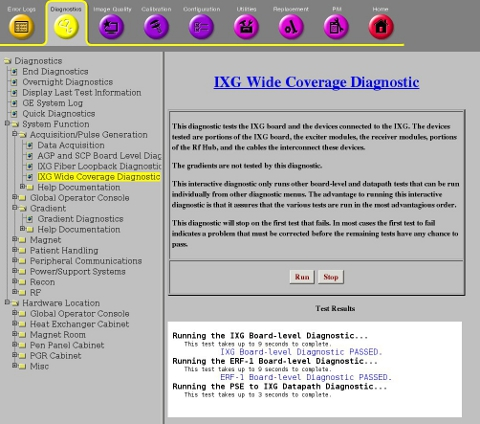

GE Exclusive Use Only
Direction 5670006, Rev# 1
Discovery MR750w GEM Service Methods
Module Version 2.0, Version Date 10/12/11
GE Exclusive Use Only |
Diagnostics >> System Function >> RF >> IXG Wide Coverage Diagnostic
Diagnostics >> Hardware Location >> PGR Cabinet >> RF >> IXG Wide Coverage Diagnostic
Illustration 1: IXG Wide Coverage Diagnostic

The IXG Wide Coverage Diagnostic is an interactive test that invokes other IXG related diagnostics in an optimal order. The diagnostic stops at the first error found and prints a red message to the screen indicating that this error must be corrected before continuing.
The sub-diagnostics are run in this order:
IXG BLD
PSE to IXG DP
DTX BLD
RRX BLD
PSE to RRX_DTX DP
RF Calibration
DTX to RRX DP
TNS DP
| NOTE: | This diagnostic only runs other board level and datapath tests that can be run individually from other diagnostic menus. |
IXG Board
Exciter Modules (DTX 1, DTX 2)
Receiver Modules (RRX)
Parts of RF Hub
Cables that interconnect these devices
None
The sub-diagnostics are run in this order:
Click [Run].
Ensure that the diagnostic passes by reviewing the status in the Test Results table.
This diagnostic has either a passed or failed status. If the diagnostic has failed, please review the error log and corresponding extended error message for subsequent actions.
In the event that the diagnostic reports a timeout, the diagnostic may not have been executed. Retry the test. If it continues to time out, complete a TPS Reset and then retry the test.